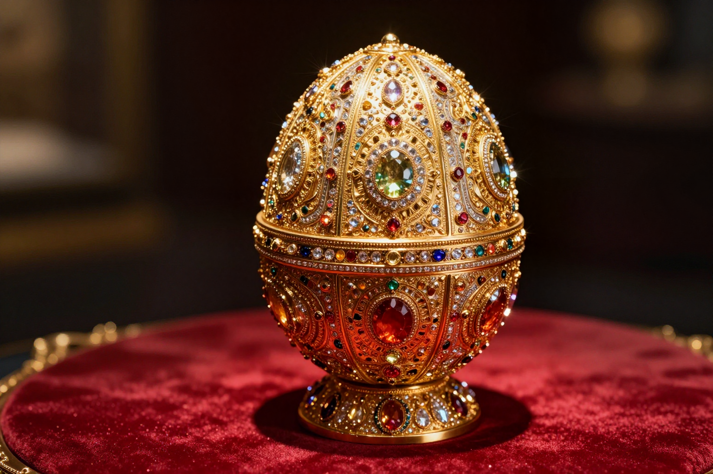
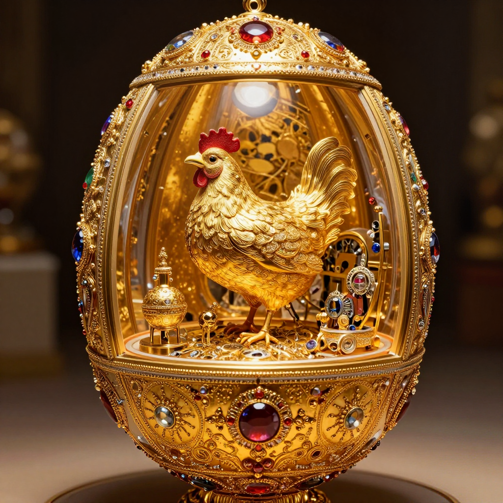
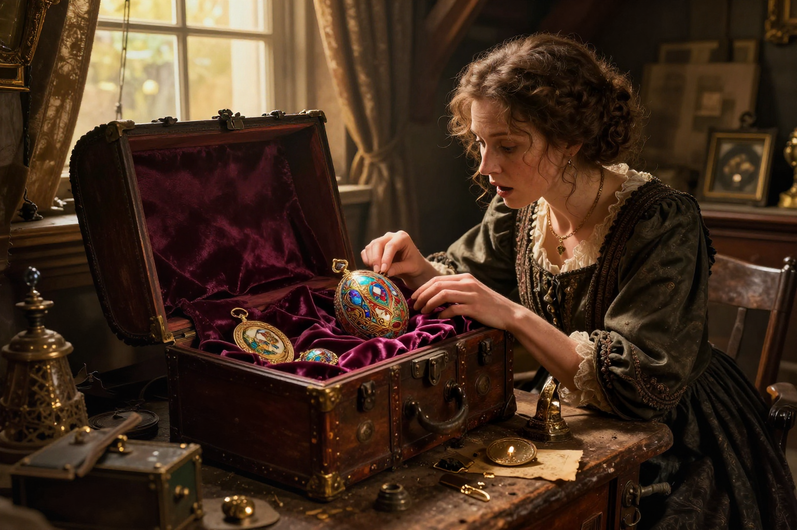

The Lost Fabergé Eggs: A Royal Treasure Hunt!

One of the beautiful Imperial Fabergé eggs - worth millions of dollars!
Imagine an egg made of gold, covered in diamonds and precious gems. Now imagine that inside this egg is another surprise - maybe a tiny golden bird, a miniature castle, or even a working train! These magical treasures really existed, and they were called Fabergé eggs.
But here's the amazing part: 8 of these incredible eggs are still missing! Could one be hiding in someone's attic right now, waiting to be discovered?
The Egg That Started It All
Long ago, in 1885, the ruler of Russia (called a Tsar) wanted to give his wife a special Easter present. He asked a famous jeweler named Peter Carl Fabergé to create something amazing.
Fabergé came up with a brilliant idea: an egg that looked simple and white on the outside, but when you opened it... surprise! Inside was a golden yolk. And inside that? A tiny golden hen! And inside the hen? A miniature diamond crown with a tiny ruby pendant!

Each Fabergé egg hid amazing surprises inside - like a nesting doll made of jewels!
The Tsar's wife loved it so much that the Tsar decided to give her a new Fabergé egg every single Easter. This tradition continued for over 30 years!
🌟 Fun Fact!
In total, 50 Imperial Fabergé eggs were created. Each one took a whole year to make, and no two were ever the same!
What Happened to the Eggs?
In 1917, a big revolution happened in Russia. The Tsar and his family lost their power, and all their treasures were taken away. Many of the beautiful Fabergé eggs disappeared in all the confusion.
Some eggs were sold to collectors around the world. Some were lost during wars. And some simply vanished - nobody knows where they went!
The Lost Eight
Today, experts know that 8 Imperial Fabergé eggs are still missing. Here are their names:
- 🎭 The Cherub with Chariot Egg
- 💜 The Mauve Egg
- 👑 The Necessaire Egg
- 🐦 The Hen with Sapphire Pendant Egg
- 💚 The Empire Nephrite Egg
- 🇩🇰 The Royal Danish Egg
- ⚔️ The Alexander III Commemorative Egg
- ❓ And one egg whose name has been forgotten!
Together, these missing eggs could be worth more than $100 million!
Amazing Discoveries!

Could a missing Fabergé egg be hiding in an attic somewhere, waiting to be found?
Here's the really exciting part: sometimes lost eggs are found again!
In 2014, a man in America bought a golden egg at a flea market for about $14,000. He wanted to melt it down for the gold. But first, he searched online to learn more about it... and discovered it was the Third Imperial Easter Egg - worth $33 million!
Imagine almost melting a $33 million treasure!
🔍 Could You Find One?
The missing eggs might be hiding in old attics, forgotten collections, or even thrift stores. Some people think they could be in Russia, hidden during the revolution. The hunt continues!
The Treasure Hunt Continues
Experts called "Fabergé researchers" are still searching for the missing eggs. They look through old auction records, family stories, and tips from people around the world.
Maybe someday, someone will open an old box in their grandmother's attic and find a piece of history worth millions. Could that someone be you?
The mystery of the lost Fabergé eggs remains unsolved... for now!
Want to Learn More?
- 📖 Fabergé Museum in St. Petersburg, Russia
- 🎨 The Virginia Museum of Fine Arts has 5 Imperial eggs!
- 🌐 Search "Fabergé eggs" online to see photos of all the found eggs